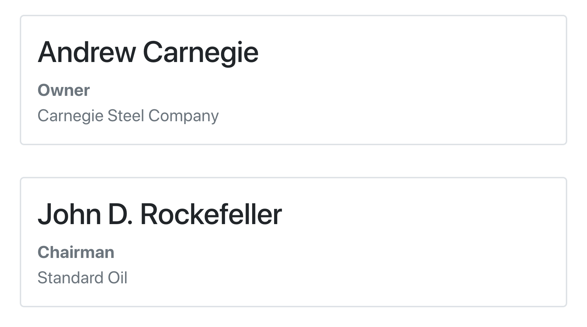

Theming foundations
Carson Sievert
2020-09-21
foundations.Rmdbootstraplib provides several functions for creating (i.e., bs_theme_new()) and adding to (i.e., bs_theme_add_variables() and bs_theme_add()) a global theme object. By default, bootstrap() includes this global theme when compiling Bootstrap Sass into CSS. Eventually, both shiny and rmarkdown will implicitly call bootstrap() to grab their Bootstrap dependency (as of today, you need to do this explictly), which means that you’ll eventually be able to use the same code to theme shiny, rmarkdown, as well as relevant by-products (e.g., flexdashboard).
This article summarizes the fundamental concepts behind theming with bootstraplib. These foundations build on top of lower-level foundations provided by the sass package, so it’s highly recommended that those new to the sass and the Sass language also read the sass overview. The aim of this article is provide you with the mental model you’ll need to perform advanced theming with bootstraplib. If you’re looking for more of a “recipe book” of shiny/rmarkdown theming examples with Bootstrap 4, see the Recipes article.
Themes are layers
bootstraplib themes are built upon sass::sass_layer(), which provides a convenient structure for organizing and combining multiple ‘layers’ or ‘bundles’ of styles in a composable way. Layers, and therefore themes, have three main components: defaults (for overriding variable defaults), declarations (for declaring Sass functions/mixins), and styling rules. Indeed, when you initialize a theme with bs_theme_new(), the class and names of the theme reflect these core pieces of the sass layer:
library(bootstraplib) bs_theme_new() class(bs_theme_get()) #> [1] "bs_theme" "sass_layer" names(bs_theme_get())[1:3] #> [1] "defaults" "declarations" "rules"
This following sections detail how to add your own layers of sass code to the theme via bs_theme_add() (and, a special case of it, bs_theme_add_variables()) with a special focus on common and useful patterns for theming with Bootstrap Sass. By far and away the most important component of the theme (i.e. layer) is defaults: this is where you have the opportunity to override Bootstrap variable defaults, which is the main (and easiest) approach to theming with Bootstrap Sass.
Defaults
Whenever you bs_theme_add() to a theme, it hoists any defaults to the top of the existing theme defaults. You can pass any input understood by sass::as_sass() here, including a named list, which is interpreted as variable definitions.
bs_theme_add(defaults = list(primary = "red !default")) bs_theme_get()$defaults
/* Sass */
$primary: red !default;
@import "/path/to/bootstrap/scss/_functions.scss";
@import "/path/to/bootstrap/scss/_variables.scss";When overriding variable defaults, it’s best practice to include a !default flag, which says “assign this value to this variable if it isn’t already defined”. This way, downstream theming decisions are allowed take precedence over upstream ones. Since this is such a common and suggested practice, we’ve provided bs_theme_add_variables(), which makes sure you’ve included a !default flag and interprets its arguments as variable names:
bs_theme_add_variables(primary = "green") bs_theme_get()$defaults
/* Sass */
$primary: green !default;
$primary: red !default;
@import "/path/to/bootstrap/scss/_functions.scss";
@import "/path/to/bootstrap/scss/_variables.scss";To demonstrate that the green default actually overrides the red default, we’ll use bootstrap_sass(), which uses the current theming defaults (and declarations) to compile Sass styling rules as a CSS string. We’re using bootstrap_sass() here purely for the sake of demonstration, but take note that this function can come in handy for styling custom CSS classes with Bootstrap Sass (this styling rule says to set the foo class’ color property to $primary).
bootstrap_sass(".foo { color: $primary; }")
The right-hand side of a variable definition may be any valid Sass expression, so to do something like add a new theme color, which requires assigning a Sass map to the $theme-colors variable, you can do:
bs_theme_add_variables( "theme-colors" = "('foo-color': orange)" )
Also note that Bootstrap provides convenient functions for accessing values of map variables like $theme-colors, $colors, and $grays (i.e., the main entry points for setting color defaults).
bootstrap_sass(".foo { color: theme-color('foo-color') }")
Declarations
Theme declarations appear immediately after defaults, and are intended for mainly 2 things: Sass mixins and variable overrides that want to reference other variables or functions. Note that writing your own mixins is really own useful if you intend on writing a lot of your own custom styling rules, so we don’t discuss them, but here’s a contrived example of how you might want to add mixins to the current theme with bs_theme_add(). In this example, since new theme declaration are placed after existing ones, mixins that appear in the mixin2.scss file could use mixins from the mixin1.scss file.
bs_theme_add(declarations = sass::sass_file('mixin1.scss')) bs_theme_add(declarations = sass::sass_file('mixin2.scss'))
In some situations, you may want to use Bootstrap functions (e.g. color-yiq()) and/or other Bootstrap variables in your variable definitions. For this scenario, you may set .where = "declarations" in bs_theme_add_variables(), which places the variable definitions after (instead of before) Bootstrap declarations (i.e., variables, functions, and mixins). For example, we could have the body’s background inherit the secondary theme color and have the body’s foreground color automatically contrast based on the background color.1
bs_theme_new() bs_theme_add_variables( "body-bg" = "$secondary", "body-color" = "color-yiq($secondary)", "well-color" = "$body-color", "table-color" = "$body-color", .where = "declarations" ) bs_theme_preview()

Rules
Generating custom styling rules based on Bootstrap is useful in at least a couple scenarios:
- For some reason, you need to override Bootstrap’s styling rules to achieve the styling you desire.
- You want to generate new rules, say new classes, that utilize Bootstrap’s functions, mixins, and/or variables.
For an example of (2), see this person.scss file, which defines rules for a custom person class, for displaying someone’s name, title, and company. To include these rules with the bundle that bootstrap() generates, provide them to the rules argument of the bs_theme_add() function.2
library(shiny) bs_theme_new() bs_theme_add( rules = sass::sass_file( system.file("custom", "person.scss", package = "bootstraplib") ) ) # Include custom CSS that leverages bootstrap Sass variables person <- function(name, title, company) { tags$div( class = "person", h3(class = "name", name), div(class = "title", title), div(class = "company", company) ) } ui <- fluidPage( bootstrap(), person("Andrew Carnegie", "Owner", "Carnegie Steel Company"), person("John D. Rockefeller", "Chairman", "Standard Oil") ) shinyApp(ui, function(input, output) {})

Summary
Themes have three main components: defaults (for overriding variable defaults), declarations (for declaring Sass functions and mixins), and styling rules. bs_theme_add() may be used to add any of these components to the existing theme and bs_theme_add_variables() is specifically designed for setting variable defaults. Recall that when you add to an existing theme:
-
defaultsfor downstreambs_theme_add()s are placed beforedefaultsfor upstreambs_theme_add()s.- Allowing downstream Sass to override variable defaults in upstream Sass.
-
declarationsfor downstreambs_theme_add()s are placed afterdeclarationsfor upstreambs_theme_add()s.- Allowing downstream Sass to use functions and mixins defined in upstream Sass.
- Allowing variable definitions to use variables defined in
defaults(or prior declarations).
-
rulesfor downstreambs_theme_add()s are placed afterrulesfor upstreambs_theme_add()s.- Allows downstream rules to take precedence over upstream rules (precedence matters when there are multiple rules with the same level of specificity).
It’s also worth noting that sass::sass_layers(), and thus themes, have more than these three components. It’s also possible to resolve relative file imports and include HTML dependencies.
Note that if, for some reason, you wanted a theme color to be based on another variable, you’d have to do,
bs_theme_add_variables("theme-colors" = 'map-merge($theme-colors, ("primary": $dark))', .where = "declarations"), since the$theme-colorsmap is constructed before declarations.↩︎You can also compile these rules with
bootstrap_sass()which returns a CSS string. In that case, you’d have to manually include the string as a<style>tag.↩︎